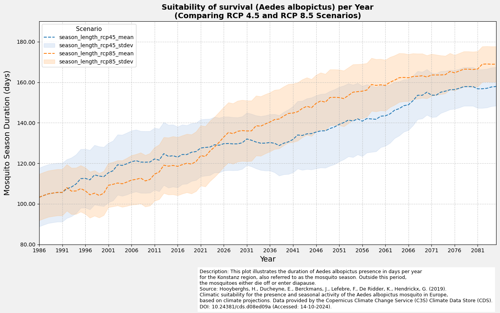
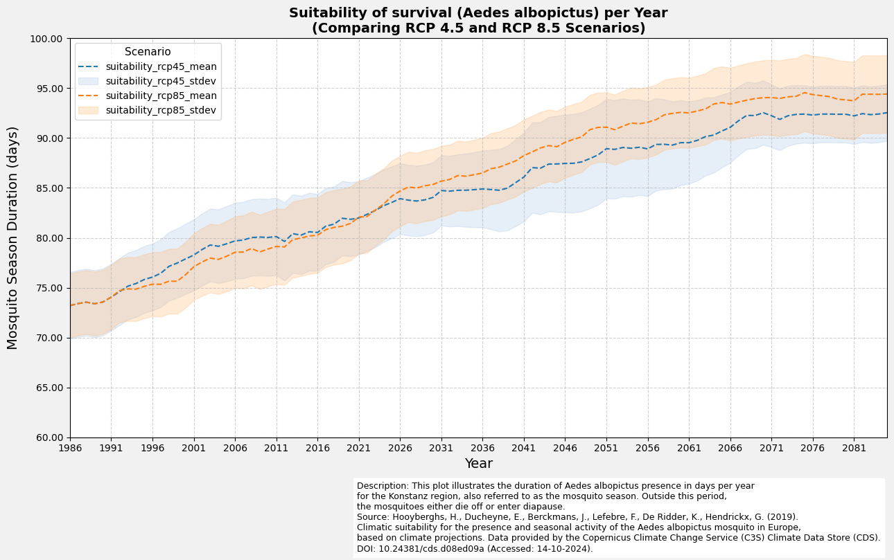

SIS Health Vector
Suitability for the occurrence and seasonal activity of the tiger mosquito (Aedes albopictus) in Europe.
This script processes the data set SIS Health Vector from the Copernics Climate Data Store. The dataset contains information on the suitability of environmental conditions and the seasonal activity of the tiger mosquito. The dataset was developed as part of the C3S European Health Service. The information is available for different future time periods and climate change scenarios.
Information on Dataset:
Source: SIS Health Vector
Author: T. Tewes (City of Konstanz)
Notebook-Version: 1.1 (Updated: March 10, 2025)
1. Specifying the paths and working directories
import os
''' ---- Specify Directories Here ---- '''
download_folder = r".\data\sis-health-vector\download"
working_folder = r".\data\sis-health-vector\working"
geotiff_folder = r".\data\sis-health-vector\geotiff"
csv_folder = r".\data\sis-health-vector\csv"
output_folder = r".\data\sis-health-vector\output"
''' ----- End of Declaration ---- '''
os.makedirs(download_folder, exist_ok=True)
os.makedirs(working_folder, exist_ok=True)
os.makedirs(geotiff_folder, exist_ok=True)
os.makedirs(csv_folder, exist_ok=True)
os.makedirs(output_folder, exist_ok=True)
2. Download and Extract the Dataset
2.1 Authentication
import cdsapi
def main():
# API key for authentication
api_key = "fdae60fd-35d4-436f-825c-c63fedab94a4"
api_url = "https://cds.climate.copernicus.eu/api"
# Creation of the CDS API client
client = cdsapi.Client(url=api_url, key=api_key)
return client
2.2 Define the “request” and Download the Dataset
# Define the bounding box coordinates (WGS84 format)
# The coordinates are in the format: [North, West, South, East]
bbox_wgs84_deutschland = [56.0, 5.8, 47.2, 15.0]
bbox_wgs84_konstanz = [47.9, 8.9, 47.6, 9.3]
bbox_wgs84_konstanz_standard = [9.0, 47.6, 9.3, 47.8] # Standard format: [West, South, East, North]
# Alternatively, use a shapefile for precise geographic filtering
import geopandas as gpd
import math
# Load the shapefile of Konstanz (WGS84 projection) for geographic boundary filtering
de_shapefile = r"./shapefiles/de_boundary.shp"
de_gdf = gpd.read_file(de_shapefile)
# Extract the bounding box of the shapefile
de_bounds = de_gdf.total_bounds
# Adjust and buffer the bounding box to create a slightly larger
de_bounds_adjusted = [(math.floor(de_bounds[0]* 10)/10)-0.1,
(math.floor(de_bounds[1]* 10)/10)-0.1,
(math.ceil(de_bounds[2]* 10)/10)+0.1,
(math.ceil(de_bounds[3]* 10)/10)+0.1]
# Rearrange the coordinates to the format: [North, West, South, East]
bbox_de_bounds_adjusted = [de_bounds_adjusted[3], de_bounds_adjusted[0],
de_bounds_adjusted[1], de_bounds_adjusted[2]]
# Definition of the dataset and the request parameters
dataset = "sis-health-vector"
request = {
"variable": [
"suitability",
"season_length"
],
"experiment": [
"rcp4_5",
"rcp8_5"
],
"ensemble_statistic": [
"ensemble_members_average",
"ensemble_members_standard_deviation"
],
"area": bbox_de_bounds_adjusted
}
# Execute it to download the dataset:
def main_retrieve():
dataset_filename = f"{dataset}.zip"
dataset_filepath = os.path.join(download_folder, dataset_filename)
# Download the dataset only if the dataset has not been downloaded before
if not os.path.isfile(dataset_filepath):
# Call the CDS client only if the dataset has not been downloaded before
client = main()
# Download the dataset with the defined request parameters
client.retrieve(dataset, request, dataset_filepath)
else:
print("Dataset already downloaded.")
if __name__ == "__main__":
main_retrieve()
Dataset already downloaded.
2.3 Extract the ZIP file in folder
import zipfile
# Define a extract folder to ZIP file same as the working folder
extract_folder = working_folder
# Extract the zip file
try:
if not os.listdir(extract_folder):
dataset_filename = f"{dataset}.zip"
dataset_filepath = os.path.join(download_folder, dataset_filename)
with zipfile.ZipFile(dataset_filepath, 'r') as zip_ref:
zip_ref.extractall(extract_folder)
print(f"Successfully extracted files to: {extract_folder}")
else:
print("Folder is not empty. Skipping extraction.")
except FileNotFoundError:
print(f"Error: The file {dataset_filepath} was not found.")
except zipfile.BadZipFile:
print(f"Error: The file {dataset_filepath} is not a valid zip file.")
except Exception as e:
print(f"An unexpected error occurred: {e}")
Folder is not empty. Skipping extraction.
3. Investigate the Metadata of the NetCDF4 file
3.1 Create a Dataframe of Available NetCDF Files
import re
import pandas as pd
def meta(filename):
# Match the filename against the expected pattern
match = re.search(r'mosquito_(suit|seas)_(rcp\d{2})_(\w+)_v(\d+\.\d+)\.', filename)
# Raise an error if the filename doesn't match the expected pattern
if not match:
raise ValueError("The given filename does not fit the expected naming scheme")
# Return metadata as a dictionary
var = match.group(1)
return dict(
filename=filename,
path=os.path.join(working_folder, filename),
variable=var,
variable_name="season_length" if var == 'seas' else "suitability",
rcp = match.group(2),
rcp_statistic = match.group(3),
# version = match.group(4),
)
# Extract metadata for all NetCDF files in the folder
# The nc_files is a dictionary that contains all the relavent metadata of availabe netcdf4 files
# This dictionary is later used to convert to GeoTiff files
nc_files = [meta(f) for f in os.listdir(extract_folder) if f.endswith('.nc')]
df_nc_files = pd.DataFrame.from_dict(nc_files)
# Modify pandas display options
pd.options.display.max_colwidth = 30
# Display the DataFrame without displaying the 'path' column
df_nc_files.loc[:, df_nc_files.columns != 'path']
| filename | variable | variable_name | rcp | rcp_statistic | |
|---|---|---|---|---|---|
| 0 | mosquito_seas_rcp45_mean_v... | seas | season_length | rcp45 | mean |
| 1 | mosquito_seas_rcp45_stdev_... | seas | season_length | rcp45 | stdev |
| 2 | mosquito_seas_rcp85_mean_v... | seas | season_length | rcp85 | mean |
| 3 | mosquito_seas_rcp85_stdev_... | seas | season_length | rcp85 | stdev |
| 4 | mosquito_suit_rcp45_mean_v... | suit | suitability | rcp45 | mean |
| 5 | mosquito_suit_rcp45_stdev_... | suit | suitability | rcp45 | stdev |
| 6 | mosquito_suit_rcp85_mean_v... | suit | suitability | rcp85 | mean |
| 7 | mosquito_suit_rcp85_stdev_... | suit | suitability | rcp85 | stdev |
3.2 Print unique Variable name(s) and Available Variables
import netCDF4 as nc
# Define variable to keep track of processed variable names to avoid duplicates
seen_variables = set()
# List all variables in each NetCDF file
for i, nc_file in enumerate(nc_files):
variable_name = nc_file['variable_name']
# Skip if the variable has already been processed
if variable_name in seen_variables:
continue
# Open the NetCDF file in read mode
with nc.Dataset(nc_file['path'], mode='r') as nc_dataset:
# List all variables in the current dataset
variables_list = list(nc_dataset.variables.keys())
# Print details of the file and its variables
print(f"{i + 1:<2} {variable_name:<18}: Available variables: {variables_list}")
# Mark this variable as seen
seen_variables.add(variable_name)
1 season_length : Available variables: ['season_length', 'height', 'lat', 'lon', 'time']
5 suitability : Available variables: ['suitability', 'height', 'lat', 'lon', 'time']
# Define variable to keep track of processed variable names to avoid duplicates
seen_variables = set()
# List all variable information in each NetCDF file
for i, nc_file in enumerate(nc_files):
variable_name = nc_file['variable_name']
# Skip if the variable has already been processed
if variable_name in seen_variables:
continue
# Open the NetCDF file in read mode
with nc.Dataset(nc_file['path'], mode='r') as nc_dataset:
# Access the primary variable data
variable_data = nc_dataset[variable_name]
# Generate a summary of the primary variable
summary = {
"Variable Name": variable_name,
"Data Type": variable_data.dtype,
"Shape": variable_data.shape,
"Variable Info": f"{variable_data.dimensions}",
"Units": getattr(variable_data, "units", "N/A"),
"Long Name": getattr(variable_data, "long_name", "N/A"),
}
# Display dataset summary as a DataFrame for better visualization
nc_summary = pd.DataFrame(list(summary.items()), columns=['Description', 'Remarks'])
print(f"{i + 1}. Summary of Variable '{variable_name}':")
display(nc_summary)
# Add the variable name to the seen set
seen_variables.add(variable_name)
# Limit output
output_limit = 3
if len(seen_variables) >= output_limit:
print(f".... (Output truncated to first {output_limit} variables)")
break
1. Summary of Variable 'season_length':
| Description | Remarks | |
|---|---|---|
| 0 | Variable Name | season_length |
| 1 | Data Type | float32 |
| 2 | Shape | (100, 82, 95) |
| 3 | Variable Info | ('time', 'lat', 'lon') |
| 4 | Units | 1 |
| 5 | Long Name | Ensemble members average o... |
5. Summary of Variable 'suitability':
| Description | Remarks | |
|---|---|---|
| 0 | Variable Name | suitability |
| 1 | Data Type | float32 |
| 2 | Shape | (100, 82, 95) |
| 3 | Variable Info | ('time', 'lat', 'lon') |
| 4 | Units | 1 |
| 5 | Long Name | Ensemble members average o... |
4. Export the NetCDF4 files in CSV format
4.1 Define a Function to convert NetCDF data to a DataFrame
import xarray as xr
# Function for converting NetCDF data into a Pandas DataFrame
def netcdf_to_dataframe(
nc_file,
bounding_box=None):
# Open the NetCDF Dataset in read mode
with xr.open_dataset(nc_file['path']) as nc_dataset:
# Access the variable data from the dataset
variable_data = nc_dataset[nc_file['variable_name']]
# Ensure latitude and longitude names are correct
latitude_name = 'latitude' if 'latitude' in nc_dataset.coords else 'lat'
longitude_name = 'longitude' if 'longitude' in nc_dataset.coords else 'lon'
# Filter the data based on the bounding box, if provided
if bounding_box:
filtered_data = variable_data.where(
(nc_dataset[latitude_name] >= bounding_box[1]) & (nc_dataset[latitude_name] <= bounding_box[3]) &
(nc_dataset[longitude_name] >= bounding_box[0]) & (nc_dataset[longitude_name] <= bounding_box[2]),
drop=True
)
else:
filtered_data = variable_data
# Convert the xarray dataset to a pandas DataFrame
df = filtered_data.to_dataframe().reset_index().set_index(['time', latitude_name, longitude_name])
variable_column_name = f"{nc_file['variable_name']}_{nc_file['rcp']}_{nc_file['rcp_statistic']}"
df.rename(columns={nc_file['variable_name']: variable_column_name}, inplace=True)
# Remove columns that are not neeeded (varies depending on the data set)
if 'height' in df.columns:
df = df.drop(columns=['height'])
if 'quantile' in df.columns:
df = df.drop(columns=['quantile'])
return df
4.2 Create DataFrame and Export as individual CSV files
# Export all netCDF4 files to individual CSV files
for nc_file in nc_files:
# Define CSV file name and path for the output
csv_filename = f"mosquito_{nc_file['variable']}_{nc_file['rcp']}_{nc_file['rcp_statistic']}.csv"
csv_filepath = os.path.join(csv_folder, csv_filename)
# Export the DataFrame as CSV if it does not already exist
if not os.path.isfile(csv_filepath):
dataframe = netcdf_to_dataframe(nc_file, bounding_box=None)
dataframe.to_csv(csv_filepath)
else:
print(f"File already exists at {csv_filepath}.\nSkipping export.")
csv_filename_latest = csv_filepath
break
print("Reading the last CSV file...")
dataframe = pd.read_csv(csv_filepath).set_index(['time', 'lat', 'lon'])
# Modify pandas display options
pd.options.display.float_format = '{:,.2f}'.format
# Display DataFrame
dataframe
File already exists at .\data\sis-health-vector\csv\mosquito_seas_rcp45_mean.csv.
Skipping export.
Reading the last CSV file...
| season_length_rcp45_mean | |||
|---|---|---|---|
| time | lat | lon | |
| 1986-01-01 | 47.10 | 5.70 | 137.85 |
| 5.80 | 134.25 | ||
| 5.90 | 127.43 | ||
| 6.00 | 118.44 | ||
| 6.10 | 103.06 | ||
| ... | ... | ... | ... |
| 2085-01-01 | 55.20 | 14.70 | 102.34 |
| 14.80 | 94.36 | ||
| 14.90 | 91.52 | ||
| 15.00 | 94.66 | ||
| 15.10 | 104.35 |
779000 rows × 1 columns
4.3 Create DataFrame and Export as merged CSV file
from tqdm.notebook import tqdm
import textwrap
# Define the output CSV filename
csv_filename = 'sis-health-vector-merged.csv.zip'
csv_path = os.path.join(csv_folder, csv_filename)
# Export the NetCDF files as merged CSV file
if not os.path.isfile(csv_path):
dataframes = [netcdf_to_dataframe(nc_file) for nc_file in tqdm(nc_files)]
df_merged = pd.concat(dataframes, axis=1)
df_merged.to_csv(csv_path, sep=',', encoding='utf8', compression='zip')
else:
print(f"File already exists at {csv_path}. Skipping export.")
print("Reading existing CSV file...")
df_merged = pd.read_csv(csv_path).set_index(['time', 'lat', 'lon'])
# Function to wrap long column names for better readability
def wrap_column_names(df, width):
wrapped_columns = {col: " ".join(textwrap.wrap(col, width)) for col in df.columns}
return df.rename(columns=wrapped_columns)
# Modify pandas display options
pd.options.display.float_format = '{:,.2f}'.format
# Display DataFrame
df_wrapped = wrap_column_names(df_merged, width=14)
df_wrapped
File already exists at .\data\sis-health-vector\csv\sis-health-vector-merged.csv.zip. Skipping export.
Reading existing CSV file...
| season_length_ rcp45_mean | season_length_ rcp45_stdev | season_length_ rcp85_mean | season_length_ rcp85_stdev | suitability_rc p45_mean | suitability_rc p45_stdev | suitability_rc p85_mean | suitability_rc p85_stdev | |||
|---|---|---|---|---|---|---|---|---|---|---|
| time | lat | lon | ||||||||
| 1986-01-01 | 47.10 | 5.70 | 137.85 | 8.88 | 137.85 | 8.32 | 83.47 | 2.55 | 83.47 | 2.63 |
| 5.80 | 134.25 | 7.83 | 134.25 | 8.09 | 80.93 | 2.91 | 80.93 | 3.02 | ||
| 5.90 | 127.43 | 10.29 | 127.43 | 9.92 | 76.16 | 3.28 | 76.16 | 3.11 | ||
| 6.00 | 118.44 | 13.42 | 118.44 | 11.70 | 69.44 | 3.90 | 69.44 | 3.57 | ||
| 6.10 | 103.06 | 13.96 | 103.06 | 12.18 | 61.91 | 3.89 | 61.91 | 3.53 | ||
| ... | ... | ... | ... | ... | ... | ... | ... | ... | ... | ... |
| 2085-01-01 | 55.20 | 14.70 | 102.34 | 20.69 | 135.23 | 18.08 | 66.27 | 10.68 | 83.59 | 9.20 |
| 14.80 | 94.36 | 22.07 | 131.20 | 20.02 | 63.85 | 10.38 | 81.74 | 9.65 | ||
| 14.90 | 91.52 | 21.24 | 128.82 | 20.77 | 63.01 | 8.24 | 81.60 | 8.25 | ||
| 15.00 | 94.66 | 19.00 | 129.81 | 19.47 | 65.55 | 7.65 | 83.25 | 7.34 | ||
| 15.10 | 104.35 | 17.06 | 138.60 | 14.97 | 68.65 | 7.68 | 85.24 | 6.53 |
779000 rows × 8 columns
5. Export the NetCDF4 files to GeoTIFF
5.1 Define a Function to export the NetCDF4 file as GeoTIFF File(s)
import numpy as np
from rasterio.transform import from_origin
import rasterio
from tqdm.notebook import tqdm
def main_export_geotiff(
nc_file,
bounding_box=None,
start_year=None,
end_year=None,
merged=None,
output_directory=None):
"""
Parameters:
nc_file (dict): A dictionary with keys 'path' (file path), 'variable', 'rcp', and 'statistic'.
bounding_box (list): [lon_min, lat_min, lon_max, lat_max] (optional).
start_year (int): Starting year for the dataset (optional).
end_year (int): Ending year for the dataset (optional).
merged (bool): Whether to generate merged GeoTIFF or individual GeoTIFFs (optional).
output_directory (str): Directory to save the output GeoTIFF files (optional).
"""
# Open the netCDF file
with nc.Dataset(nc_file['path'], 'r') as nc_dataset:
nc_dataset = nc.Dataset(nc_file['path'], 'r')
lon = nc_dataset['lon'][:]
lat = nc_dataset['lat'][:]
# Apply geographic filtering if a bounding box is provided
if bounding_box:
lon_min, lat_min, lon_max, lat_max = bounding_box
indices_lat = np.where((lat >= lat_min) & (lat <= lat_max))[0]
indices_lon = np.where((lon >= lon_min) & (lon <= lon_max))[0]
start_lat, end_lat = indices_lat[0], indices_lat[-1] + 1
start_lon, end_lon = indices_lon[0], indices_lon[-1] + 1
else:
start_lat, end_lat = 0, len(lat)
start_lon, end_lon = 0, len(lon)
lat = lat[start_lat:end_lat]
lon = lon[start_lon:end_lon]
# Extract time variable and convert it to readable dates
time_var = nc_dataset.variables['time']
time_units = time_var.units
time_calendar = getattr(time_var, "calendar", "standard")
cftime = nc.num2date(time_var[:], units=time_units, calendar=time_calendar)
# Compute spatial resolution and raster transformation
dx = abs(lon[1] - lon[0])
dy = abs(lat[1] - lat[0])
transform = from_origin(lon.min() - dx / 2, lat.min() - dy / 2, dx, -dy)
# Determine the time range
min_year = cftime[0].year
max_year = cftime[-1].year
if start_year and end_year:
# Customise start_year and end_year based on the available time period
if start_year < min_year:
print(f"Start year {start_year} is before dataset range. Adjusting to {min_year}.")
if end_year > max_year:
print(f"End year {end_year} exceeds dataset range. Adjusting to {max_year}.")
start_year = max(start_year, min_year)
end_year = min(end_year, max_year)
else:
# Default to full dataset range
start_year = min_year
end_year = max_year
# Find indices corresponding to the specified year range
start_index = next(i for i, dt in enumerate(cftime) if dt.year == start_year)
end_index = next(i for i, dt in enumerate(cftime) if dt.year == end_year) + 1 # Full year (monthly data)
# Extract variable data
variable_data = nc_dataset.variables[nc_file['variable_name']]
variable_data_subset = variable_data[start_index:end_index, start_lat:end_lat, start_lon:end_lon]
# Create nc_filename prefix
nc_filename_prefix = f"mosquito_{nc_file['variable_name']}_{nc_file['rcp']}_{nc_file['rcp_statistic']}"
if merged:
# Create a merged GeoTIFF containing all time slices as separate bands
if output_directory:
subset_directory_path = output_directory
else:
subset_directory_path = os.path.join(geotiff_folder, f"{dataset}_merged")
os.makedirs(subset_directory_path, exist_ok=True)
# Define output file path
output_filename = f"{nc_filename_prefix}-merged-{start_year}-{end_year}.tif"
output_filepath = os.path.join(subset_directory_path, output_filename)
# Create a GeoTIFF with multiple bands for each time slice
with rasterio.open(
output_filepath,
"w",
driver = "GTiff",
dtype = str(variable_data_subset.dtype),
width = variable_data_subset.shape[2],
height = variable_data_subset.shape[1],
count = variable_data_subset.shape[0],
crs = "EPSG:4326",
nodata = -9999,
transform=transform,
) as dst:
for year_index in tqdm(range(variable_data_subset.shape[0]),
desc=f"Exporting merged GeoTIFF file from {start_year} to {end_year}"):
band_data = variable_data_subset[year_index,:,:]
dt = cftime[start_index + year_index]
band_desc = f"{dt.year:04d}-{dt.month:02d}-{dt.day:02d}"
# Write each year slice as a band
dst.write(band_data, year_index + 1)
dst.set_band_description(year_index + 1, band_desc)
else:
# Export as individual GeoTIFF files
if output_directory:
subset_directory_path = output_directory
else:
subset_directory_path = os.path.join(geotiff_folder, f"{dataset}_individual")
os.makedirs(subset_directory_path, exist_ok=True)
for year_index in tqdm(range(variable_data_subset.shape[0]),
desc="Exporting individual GeoTIFF files"):
# Retrieve the date for the current time slice
dt = cftime[start_index + year_index]
dt_full = f"{dt.year:04d}-{dt.month:02d}-{dt.day:02d}"
# Define output file path
output_filename = f"{nc_filename_prefix}_{dt_full}.tif"
output_filepath = os.path.join(subset_directory_path, output_filename)
# Export current time slice as an individual GeoTIFF
with rasterio.open(
output_filepath,
"w",
driver="GTiff",
dtype=str(variable_data_subset.dtype),
width=variable_data_subset.shape[2],
height=variable_data_subset.shape[1],
count=1,
crs="EPSG:4326",
nodata=-9999,
transform=transform,
) as dst:
year_precipitation_data = variable_data_subset[year_index, :, :]
dst.write(year_precipitation_data, 1)
dst.set_band_description(1, f"{dt.year:04d}-{dt.month:02d}-{dt.day:02d}")
5.2 Export selected NetCDF4 file(s) to GeoTIFF file(s)
if __name__ == "__main__":
# Export all NetCDF file as merged GeoTIFF file
for nc_file in nc_files:
main_export_geotiff(
nc_file=nc_file,
bounding_box=None,
merged=True
)
# Export the first file = mosquito_seas_rcp45_mean_v1.0 as individual files
main_export_geotiff(
nc_file=nc_files[0],
bounding_box=None,
start_year = 1995,
end_year = 2000,
merged=False
)
# # Additional case (Advanced filtering)
# temp_folder = os.path.join(geotiff_folder, "_temp_folder")
# os.makedirs(temp_folder, exist_ok=True)
# main_export_geotiff(
# nc_file=nc_files[0],
# bounding_box=bbox_wgs84_konstanz_standard,
# start_year=1995,
# end_year=2000,
# merged=False,
# output_directory=temp_folder
# )
6. Analysis and Visualization Options
6.1 Prepare the data for visualization
# Filter data for the city of Konstanz Region (WGS84 format)
lon_min, lat_min, lon_max, lat_max = bbox_wgs84_konstanz_standard
# Filter the dataframe with query
filtered_df = (
df_merged.query(
"@lat_min <= lat <= @lat_max and @lon_min <= lon <= @lon_max"
)
.reset_index()
.set_index("time")
)
# Display DataFrame
df_wrapped = wrap_column_names(filtered_df, width=15)
df_wrapped.head()
| lat | lon | season_length_r cp45_mean | season_length_r cp45_stdev | season_length_r cp85_mean | season_length_r cp85_stdev | suitability_rcp 45_mean | suitability_rcp 45_stdev | suitability_rcp 85_mean | suitability_rcp 85_stdev | |
|---|---|---|---|---|---|---|---|---|---|---|
| time | ||||||||||
| 1986-01-01 | 47.60 | 9.00 | 106.96 | 12.80 | 106.96 | 10.82 | 74.46 | 3.40 | 74.46 | 3.24 |
| 1986-01-01 | 47.60 | 9.10 | 109.16 | 12.32 | 109.16 | 10.61 | 76.52 | 2.88 | 76.52 | 2.79 |
| 1986-01-01 | 47.60 | 9.20 | 111.20 | 12.67 | 111.20 | 11.31 | 77.60 | 2.58 | 77.60 | 2.49 |
| 1986-01-01 | 47.70 | 9.00 | 105.13 | 12.74 | 105.13 | 9.80 | 72.90 | 3.08 | 72.90 | 2.89 |
| 1986-01-01 | 47.70 | 9.10 | 105.82 | 13.31 | 105.82 | 10.28 | 75.07 | 2.67 | 75.07 | 2.55 |
6.2 Filter data and calculate monthly average
# Group by the 'time' index and calculate the mean for each group
filtered_df_average = filtered_df.groupby(level='time').mean()
filtered_df_average = filtered_df_average.drop(columns=['lat', 'lon'])
# Display DataFrame
df_wrapped = wrap_column_names(filtered_df_average, width=15)
df_wrapped.head()
| season_length_r cp45_mean | season_length_r cp45_stdev | season_length_r cp85_mean | season_length_r cp85_stdev | suitability_rcp 45_mean | suitability_rcp 45_stdev | suitability_rcp 85_mean | suitability_rcp 85_stdev | |
|---|---|---|---|---|---|---|---|---|
| time | ||||||||
| 1986-01-01 | 103.26 | 14.47 | 103.26 | 11.42 | 73.20 | 3.35 | 73.20 | 3.20 |
| 1987-01-01 | 104.15 | 14.47 | 104.15 | 11.42 | 73.40 | 3.35 | 73.40 | 3.20 |
| 1988-01-01 | 104.95 | 14.47 | 104.95 | 11.42 | 73.55 | 3.35 | 73.55 | 3.20 |
| 1989-01-01 | 105.32 | 14.47 | 105.32 | 11.42 | 73.38 | 3.35 | 73.38 | 3.20 |
| 1990-01-01 | 105.66 | 14.47 | 105.66 | 11.42 | 73.56 | 3.35 | 73.56 | 3.20 |
6.3 Define a Function to create Line Graph with error
import matplotlib.pyplot as plt
import matplotlib.ticker as ticker
def plot_with_shaded_area(ax, x, y_mean, y_stdev, line_color, fill_color, line_label, fill_label, marker_style):
"""Helper function to plot mean lines with shaded area."""
ax.plot(x, y_mean, color=line_color, label=line_label, marker=marker_style, markevery=5, linestyle='--')
ax.fill_between(x, y_mean - y_stdev, y_mean + y_stdev, color=fill_color, alpha=0.3, label=fill_label)
def plot_mosquito_season(filtered_df_average, variable_name):
# Create the plot
fig, ax = plt.subplots(figsize=(13, 7), facecolor='#f1f1f1', edgecolor='k')
# Plot data for rcp45
plot_with_shaded_area(
ax=ax,
x=filtered_df_average.index,
y_mean=filtered_df_average[f"{variable_name}_rcp45_mean"],
y_stdev=filtered_df_average[f"{variable_name}_rcp45_stdev"],
line_color='#1f77b4',
fill_color='#aec7e8',
line_label=f"{variable_name}_rcp45_mean",
fill_label=f"{variable_name}_rcp45_stdev",
marker_style=None
)
# Plot data for rcp85
plot_with_shaded_area(
ax=ax,
x=filtered_df_average.index,
y_mean=filtered_df_average[f"{variable_name}_rcp85_mean"],
y_stdev=filtered_df_average[f"{variable_name}_rcp85_stdev"],
line_color='#ff7f0e',
fill_color='#ffbb78',
line_label=f"{variable_name}_rcp85_mean",
fill_label=f"{variable_name}_rcp85_stdev",
marker_style=None
)
# Set the Y-axis range dynamically
interval = 10
rcp45_min = filtered_df_average[f"{variable_name}_rcp45_mean"].min() - \
filtered_df_average[f"{variable_name}_rcp45_stdev"].max()
rcp85_min = filtered_df_average[f"{variable_name}_rcp85_mean"].min() - \
filtered_df_average[f"{variable_name}_rcp85_stdev"].max()
y_min = max(0, min(rcp45_min, rcp85_min) - 0.5)
y_min = y_min // interval * interval
rcp45_max = filtered_df_average[f"{variable_name}_rcp45_mean"].max() + \
filtered_df_average[f"{variable_name}_rcp45_stdev"].max()
rcp85_max = filtered_df_average[f"{variable_name}_rcp85_mean"].max() + \
filtered_df_average[f"{variable_name}_rcp85_stdev"].max()
y_max = max(rcp45_max, rcp85_max) + 0.5
y_max = (y_max + interval) // interval * interval
ax.set_ylim(y_min, y_max)
# Adjust x-ticks for better readability
ax.set_xlim(filtered_df_average.index.min(), filtered_df_average.index.max())
ax.set_xticks(filtered_df_average.index[::5])
tick_positions = filtered_df_average.index[::5]
tick_labels = [str(pd.to_datetime(date).year) for date in tick_positions]
ax.set_xticks(ticks=tick_positions, labels=tick_labels, rotation=0)
# Add gridlines
ax.grid(visible=True, color='#b0b0b0', linestyle='--', linewidth=0.8, alpha=0.6)
ax.yaxis.set_major_formatter(ticker.FormatStrFormatter('%0.2f'))
# Customize plot labels and title
ax.set_xlabel('Year', fontsize=14)
ax.set_ylabel('Mosquito Season Duration (days)', fontsize=14, labelpad=10)
ax.set_title(
f"{'Season length' if variable_name=='seas' else 'Suitability of survival'} (Aedes albopictus) per Year\n(Comparing RCP 4.5 and RCP 8.5 Scenarios)",
fontsize=14,
fontweight='bold'
)
# Legend adjustments
ax.legend(loc='upper left', fontsize=10, frameon=True, title='Scenario', title_fontsize=11)
# Add description and source
plt.figtext(
0.40,
-0.075,
(
'Description: This plot illustrates the duration of Aedes albopictus presence in days per year\n'
'for the Konstanz region, also referred to as the mosquito season. Outside this period,\n'
'the mosquitoes either die off or enter diapause.\n'
'Source: Hooyberghs, H., Ducheyne, E., Berckmans, J., Lefebre, F., De Ridder, K., Hendrickx, G. (2019).\n'
'Climatic suitability for the presence and seasonal activity of the Aedes albopictus mosquito in Europe,\n'
'based on climate projections. Data provided by the Copernicus Climate Change Service (C3S) Climate Data Store (CDS).\n'
'DOI: 10.24381/cds.d08ed09a (Accessed: 14-10-2024).'
),
ha='left',
va='center',
fontsize=9,
wrap=True,
backgroundcolor='w',
)
# Adjust layout and display the plot
fig.tight_layout()
plt.show()
6.4 Visualization of Line Graph with error
if __name__ == "__main__":
plot_mosquito_season(filtered_df_average=filtered_df_average,
variable_name='season_length')
plot_mosquito_season(filtered_df_average=filtered_df_average,
variable_name='suitability')


6.5 Define a Function to create Heatmap
import matplotlib.pyplot as plt
import cartopy.feature as cfeature
import cartopy.crs as ccrs
import numpy as np
def main_plt_plot(
nc_file=nc_file,
selected_year=None,
bounding_box=None):
# Open the NetCDF dataset
nc_dataset = nc.Dataset(nc_file['path'], mode='r')
lat = nc_dataset.variables['lat'][:]
lon = nc_dataset.variables['lon'][:]
# Apply geographic filtering if a bounding box is provided
if bounding_box:
lat_indices = np.where((lat >= bounding_box[1]) & (lat <= bounding_box[3]))[0]
lon_indices = np.where((lon >= bounding_box[0]) & (lon <= bounding_box[2]))[0]
lat_subset = lat[lat_indices]
lon_subset = lon[lon_indices]
else:
lat_indices = slice(None)
lon_indices = slice(None)
lat_subset = lat
lon_subset = lon
# Extract variable data
variable_name = nc_file['variable_name']
variable_data = nc_dataset.variables[variable_name][..., lat_indices, lon_indices]
var_units = getattr(nc_dataset.variables[variable_name], "units", "N/A")
# Determine the year index based on selected_year
if selected_year < 1986:
year_index = 0
year = 1985
elif selected_year > 2085:
year_index = -1
year = 2085
else:
year_index = selected_year-1986
year = selected_year
# Extract the data for the selected year
band_data = variable_data[year_index]
# Remove NaN values for percentile calculations
band_data_nonan = band_data[~np.isnan(band_data)]
vmin = np.nanpercentile(band_data_nonan, 1)
vmax = np.nanpercentile(band_data_nonan, 99)
def dynamic_round(value):
# Determine the magnitude of the value
order_of_magnitude = np.floor(np.log10(abs(value)))
# Use this magnitude to dynamically choose precision
if order_of_magnitude < -2: # Values less than 0.01
return round(value, 3)
elif order_of_magnitude < -1: # Values between 0.01 and 1
return round(value, 2)
elif order_of_magnitude < 0: # Values between 1 and 10
return round(value, 1)
else: # Values 10 or larger
return round(value)
# Apply dynamic rounding to vmin and vmax
vmin = dynamic_round(vmin)
vmax = dynamic_round(vmax)
bins = 10
interval = (vmax - vmin) / bins
# Create a 2D mesh grid for plotting
lon_grid, lat_grid = np.meshgrid(lon_subset, lat_subset)
# Create the figure
fig, ax = plt.subplots(
figsize=(12, 8),
facecolor='#f1f1f1',
edgecolor='k',
subplot_kw={'projection': ccrs.PlateCarree()}
)
# Add map features
ax.coastlines(edgecolor='black', linewidth=1.5)
ax.add_feature(cfeature.BORDERS, edgecolor='black', linewidth=1.5)
# Create a colormesh plot with the specified colormap and bounds
cmap = plt.get_cmap("viridis", bins)
pcm = ax.pcolormesh(
lon_grid,
lat_grid,
band_data,
transform=ccrs.PlateCarree(),
cmap=cmap,
shading='auto',
vmin=vmin,
vmax=vmax,
)
# Add a colorbar
ticks = np.linspace(vmin, vmax, num=bins + 1)
cbar = plt.colorbar(pcm, ax=ax, orientation='vertical', pad=0.02, ticks=ticks)
cbar.set_label(f"{variable_name}", fontsize=12)
cbar.ax.tick_params(labelsize=12)
# Add grid lines
gl = ax.gridlines(draw_labels=True,
crs=ccrs.PlateCarree(),
linewidth=0.8,
color='gray',
alpha=0.7,
linestyle='--')
gl.top_labels = False
gl.right_labels = False
gl.xlabel_style = {'size': 10, 'color': 'black'}
gl.ylabel_style = {'size': 10, 'color': 'black'}
# Add title and labels
fig.text(0.5, 0.0, 'Longitude', ha='center', fontsize=14)
fig.text(0.06, 0.5, 'Latitude', va='center', rotation='vertical', fontsize=14)
ax.set_aspect("equal")
# Add a title
ax.set_title(f"{variable_name}, {year}", fontsize=14)
# Adjust layout and display the plot
plt.tight_layout()
plt.show()
6.6 Visualization with Heatmap
if __name__ == "__main__":
# Example usage case
main_plt_plot(nc_file=nc_files[0],
selected_year=2010,
)
main_plt_plot(nc_file=nc_files[4],
selected_year=2010,
)
C:\Users\ShaileshShrestha\anaconda3\envs\cds_env\lib\site-packages\numpy\lib\_function_base_impl.py:4842: UserWarning: Warning: 'partition' will ignore the 'mask' of the MaskedArray.
arr.partition(
C:\Users\ShaileshShrestha\AppData\Local\Temp\ipykernel_32960\358316638.py:56: RuntimeWarning: divide by zero encountered in log10
order_of_magnitude = np.floor(np.log10(abs(value)))
C:\Users\ShaileshShrestha\anaconda3\envs\cds_env\lib\site-packages\numpy\lib\_function_base_impl.py:4842: UserWarning: Warning: 'partition' will ignore the 'mask' of the MaskedArray.
arr.partition(